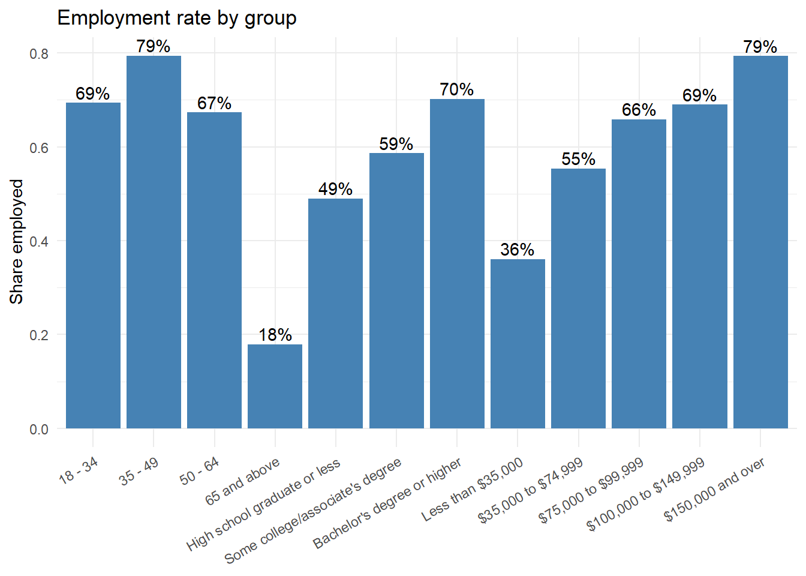
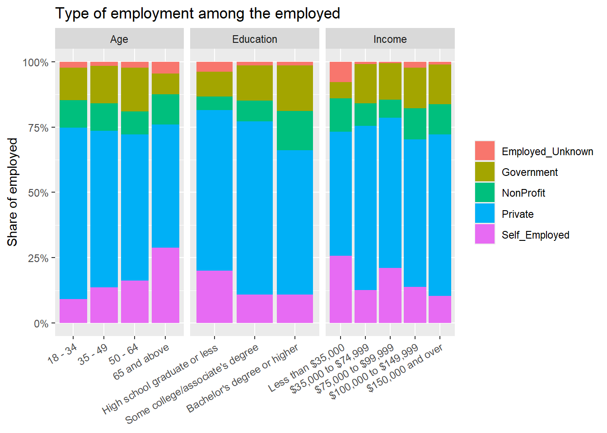

library(tidyverse)
raw <- read_csv(
"https://raw.githubusercontent.com/Keenan-Roe/DATA-607/main/Project%202/employ2.csv",
col_names = FALSE,
col_types = cols(.default = col_character()),
locale = locale(encoding = "windows-1252"),
skip_empty_rows = FALSE
)
#from the start of data in the col to the end of data in the column
start <- which(raw$X1 == "Total")[1]
end <- which(str_detect(raw$X1, "^\\*\\*"))[1] - 1
#trim out all empty data and rename rows
body <- raw[start:end, 1:10]
names(body) <- c("label", "Total", "emp_total", "emp_Gov", "emp_private", "emp_nonprofit", "emp_self", "emp_not_reported", "unemp", "unemp_not_reported")
employment_column <- c("Employed", "Total", "Yes", "Yes", "Yes", "Yes", "Yes", "Yes", "No", "No")
type_column <- c("All Serveyed", "All", "Total", "Government", "Private", "NonProfit", "Self_Employed", "Employed_Unknown", "Unemployed", "Unemployed_Unknown")
# create 3 datasets that are identicaly shaped for easy transforms
age <- rbind(
employment_column,
type_column,
body |> slice(3:6)
)
education <- rbind(
employment_column,
type_column,
body |> slice(21:23))
income <- rbind(
employment_column,
type_column,
body |> slice(39:43))
age_long <- as.data.frame(t(age)) |>
remove_rownames() |>
rename_with(~ age$label) |>
slice(-1)
education_long <- as.data.frame(t(education)) |>
remove_rownames() |>
rename_with(~ education$label) |>
slice(-1)
income_long <- as.data.frame(t(income)) |>
remove_rownames() |>
rename_with(~ income$label) |>
slice(-1)Project 2 Tidy Data
Introduction
When taking in the data, we have to change the encoding style to be able to read it like any other csv. In addition, the dataset we are working with has several blank pieces of data that need to be removed. When performing an analysis we should break it up by demographics and look at subsection of those demographics. In this instance, we are looking at Age, Education, and Income. Within those categories we are given age ranges, education levels, and yearly income.
Wide to long
Now that we have the 3 demographics we will be looking at in the exact same formatting we can create a function that will be able to transform each of them in to a clean longer style dataset giving us the opportunity to use pivot longer and put them back together to analyse each category together. We will also need to convert the text numbers into real numbers to perform some basic analysis.
read_one <- function(path, dimension) {
read_csv(path, col_types = cols(.default = "c")) |>
select(-1) |>
rename(employed = Employed, category = `All Serveyed`) |>
pivot_longer(-c(employed, category),
names_to = "group", values_to = "n") |>
mutate(n = parse_number(n),
group = factor(group, levels = unique(group)),
dimension = dimension)
}Clean Data Aggregation
Using our function, we will create different datasets and output some basic summary statistics. This does not help us glean much information so we will move on to analysis and plot creation to get an idea of the trends we can identify in the data.
age <- read_one("age_long.csv", "Age")
education <- read_one("education_long.csv", "Education")
income <- read_one("income_long.csv", "Income")
all_data <- bind_rows(age, education, income) |>
mutate(group = fct_inorder(as.character(group)))
glimpse(all_data)Rows: 108
Columns: 5
$ employed <chr> "Total", "Total", "Total", "Total", "Yes", "Yes", "Yes", "Ye…
$ category <chr> "All", "All", "All", "All", "Total", "Total", "Total", "Tota…
$ group <fct> "18 - 34", "35 - 49", "50 - 64", "65 and above", "18 - 34", …
$ n <dbl> 74040588, 64578630, 60081266, 62834010, 51357981, 51286243, …
$ dimension <chr> "Age", "Age", "Age", "Age", "Age", "Age", "Age", "Age", "Age…summary(all_data$n) Min. 1st Qu. Median Mean 3rd Qu. Max.
110129 1898868 6598528 17887954 27179994 105894822 Analysis
Now that we have the data in a clean data format, we can start looking at it proportionally. With our previously created status of employment indicators we can break this up into yes and no indicators to create a proportion of employment between each category. We can then present the results in different charts showcasing the proportionality.
emp_rate <- all_data |>
filter((employed == "Yes" & category == "Total") |
(employed == "Total" & category == "All")) |>
select(dimension, group, category, n) |>
pivot_wider(names_from = category, values_from = n) |>
rename(employed = Total, surveyed = All) |>
mutate(emp_rate = employed / surveyed)
print(emp_rate, n = Inf)# A tibble: 12 × 5
dimension group surveyed employed emp_rate
<chr> <fct> <dbl> <dbl> <dbl>
1 Age 18 - 34 74040588 51357981 0.694
2 Age 35 - 49 64578630 51286243 0.794
3 Age 50 - 64 60081266 40451416 0.673
4 Age 65 and above 62834010 11246569 0.179
5 Education High school graduate or less 105894822 51858168 0.490
6 Education Some college/associate's degree 58760346 34454796 0.586
7 Education Bachelor's degree or higher 96879326 68029245 0.702
8 Income Less than $35,000 38889164 14015531 0.360
9 Income $35,000 to $74,999 59640818 33007013 0.553
10 Income $75,000 to $99,999 31787579 20943449 0.659
11 Income $100,000 to $149,999 38944777 26875838 0.690
12 Income $150,000 and over 51445375 40819427 0.793sector_share <- all_data |>
filter(employed == "Yes", category != "Total") |>
group_by(dimension, group) |>
mutate(share = n / sum(n)) |>
ungroup()
sector_share |>
select(dimension, group, category, share) |>
mutate(share = round(share, 3)) |>
pivot_wider(names_from = category, values_from = share) |>
print(n = Inf)# A tibble: 12 × 7
dimension group Government Private NonProfit Self_Employed Employed_Unknown
<chr> <fct> <dbl> <dbl> <dbl> <dbl> <dbl>
1 Age 18 - 34 0.123 0.655 0.106 0.092 0.023
2 Age 35 - 49 0.144 0.599 0.105 0.137 0.015
3 Age 50 - 64 0.168 0.561 0.088 0.161 0.022
4 Age 65 and… 0.08 0.471 0.115 0.289 0.045
5 Education High s… 0.096 0.614 0.053 0.201 0.037
6 Education Some c… 0.134 0.664 0.08 0.108 0.014
7 Education Bachel… 0.174 0.553 0.15 0.109 0.014
8 Income Less t… 0.062 0.476 0.129 0.257 0.077
9 Income $35,00… 0.15 0.629 0.086 0.126 0.008
10 Income $75,00… 0.14 0.574 0.069 0.211 0.005
11 Income $100,0… 0.156 0.565 0.12 0.138 0.022
12 Income $150,0… 0.153 0.619 0.115 0.103 0.009ggplot(emp_rate, aes(group, emp_rate)) +
geom_col(fill = "steelblue") +
geom_text(aes(label = scales::percent(emp_rate, accuracy = 1)), vjust = -0.3) +
labs(title = "Employment rate by group", x = NULL, y = "Share employed") +
theme_minimal() +
theme(axis.text.x = element_text(angle = 30, hjust = 1))
ggplot(sector_share, aes(group, share, fill = category)) +
geom_col() +
facet_wrap(~dimension, scales = "free_x") +
scale_y_continuous(labels = scales::percent) +
labs(title = "Type of employment among the employed",
x = NULL, y = "Share of employed", fill = NULL) +
theme(axis.text.x = element_text(angle = 30, hjust = 1))
Some of the trends represented in the data are somewhat surprising. The total employment rate is given to be 0.5901409 which does not represent the actual unemployment rate. The unemployment rate only covers the porportion of hte population that is eligible to work and is not able to or choose not to work while this will take into account all individuals that do not work regardless of status. We can see that even within retirement age, we still have 18% employment rate while the peak employment rate is seen between 35 and 49. Moving onto education, we see that employment rates increase steadily with the level of education achieved. Finally, the employment rate for those with income increases as income becomes higher as one would expect.
When looking at the types of employment we see a slight uniformity across the board with a few noticeable exceptions. Self-employment gets much more popular in later years of life peaking past 25% in the 65 and above category while many at that age choose to retire from government position. We can see that non-profit work is far more common among those with higher education degrees as well while self-employment is slightly more common among those that chose to stop at a high school degree or less.
Conclusion
It is very difficult to spot clear trends in large datasets like this when breaking down the groups in such broad terms. Much more specific descriptions would be needed to determine habits of groups and what environmental pressures lead them to make these decisions. It is easy to say that government workers retired at 65 for their pension, but that still leaves us wondering what pressures those who chose to stay were experiencing. This data should be in line with even a layman’s understanding of employment trends. The next important step would be statistics that help us identify motivations in the demographics themselves.